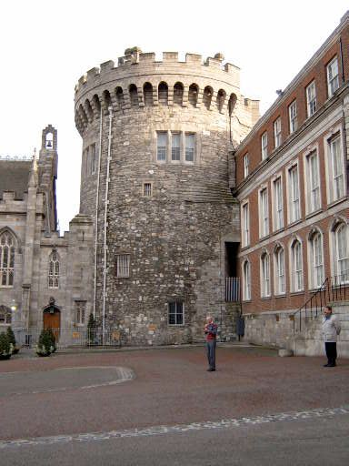
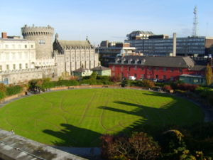
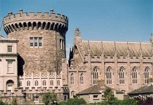

O Castelo de Dublin



O Castelo de Dublin foi inicialmente fundado como um importante complexo defensivo por ordem do Rei João, em 1204, pouco depois da invasão normanda da Irlanda, ocorrida em 1169, quando aquele monarca mandou erguer um castelo com fortes muralhas e bons fossos para a defesa da cidade, a administração de justiça e a protecção do tesouro do rei. Largamente concluído em 1230, o castelo tinha o desenho típico dos pátios normandos, com uma praça central desprovida de torre de menagem, delimitada em todos os lados por altas muralhas defensivas e protegida em cada canto por uma torre circular. Situado na área sudeste da Dublin normanda, o castelo formava uma esquina do perímetro exterior da cidade, usando o Rio Poddle como um meio natural de defesa ao longo de dois dos seus lados. A muralha da cidade passava directamente ao lado da torre nordeste do castelo, a Torre Powder (Powder Tower), estendendo-se para norte e oeste em volta da cidade antes de se reunir ao castelo na sua torre sudoeste, a Torre Bermingham (Bermingham Tower). O Poddle foi desviado para a cidade através de passagens arcadas onde as muralhas se juntavam ao castelo, enchendo artificialmente o fosso da fortaleza. Uma destas arcadas e parte da muralha sobrevivem enterradas sob os edifícios setecentistas do castelo, estando abertos à inspecção pública.
Vista exterior da torre normanda
Ao longo da Idade Média os edifícios de madeira dentro da praça do castelo evoluíram e mudaram, sendo a Grande Galeria (Great Hall) construída em pedras e madeira, sendo variadamente usado como Casa do Parlamento (Parliament House), Tribunal de Lei (Court of Law) e Galeria de Banquetes (Banqueting Hall). Este edifício sobreviveu até 1673, quando foi danificado pelo fogo e demolido pouco depois. Actualmente, não restam traços de qualquer edifício medieval acima do nível da relva, com excepção da Torre dos Registos (Record Tower), datada de cerca de 1228-1230, a única torre sobrevivente da fortificação original: o seu parapeito ameado é uma adição do século XIX.
Durante todo o período de governo britânico da Irlanda, o termo "Castle Catholic" ("Católico do Castelo") era uma forma pejorativa usada em relação aos católicos que eram vistos em amizade aberta com a administração britânica ou dando-lhe o seu apoio.
Em 1907 deu-se um roubo no castelo que receberia cobertura internacional, quando os distintivos da Ordem de São Patrício, conhecidos como Jóias da Coroa Irlandesa, foram roubados da Torre Bedford (Bedford Tower) pouco antes duma visita do Soberano da Ordem, o Rei Eduardo VII. O paradeiro desses distintivos permanece desconhecido.
Os jardins do Castelo de Dublin, na parte posterior do edifício
Durante a Guerra Anglo-Irlandesa o castelo foi o centro nevrálgico dos esforços britânicos contra o separatismo irlandês. No "Domingo Sangrento" (Bloody Sunday), em 1920, dois oficiais do Exército Republicano Irlandês e um amigo destes foram assassinados, "enquanto tentavam escapar", nos campos do castelo.
O castelo deixou de ser usado para fins governamentais com a chegada do Estado Livre Irlandês em 1922. Serviu durante alguns anos como Tribunal de Justiça temporário (o edifício das Four Courts, sede do sistema judicial irlandês, tinha sido destruído em 1922). Quando os tribunais se mudarm, o Castelo de Dublin passou a ser usado para cerimónias de Estado. Eamon de Valera, enquanto Presidente do Conselho Executivo, em nome do Rei Jorge V, recebeu ali as credenciais dos embaixadores na Irlandana década de 1930. Em 1938, foi usado para a cerimónia de tomada de posse de Douglas Hyde enquanto Presidente da Irlanda. Tiveram ali lugar tomadas de posse posteriores em 1945, 1952, 1959, 1966, 1973, 1974, 1976, 1983, 1990, e 1997. O Presidente Erskine Hamilton Childers esteve em câmara ardente no castelo em Novembro de 1974, tal como aconteceu com o antigo Presidente Eamon de Valera, em Setembro de 1975.
O castelo é uma atracção turística e, depois dum importante remobilamento, também é usado como centro de conferências. Durante as presidências irlandesas da União Europeia, incluindo a mais recente no primeiro semestre de 2004, tem servido de cenário a muitos encontros do Conselho Europeu. A cripta da Capela Real é actualmente usada como centro de artes, sendo realizados ocasionalmente concertos nos terrenos do castelo. O complexo de edifícios está habitualmente aberto ao público, excepto durante funções de Estado.